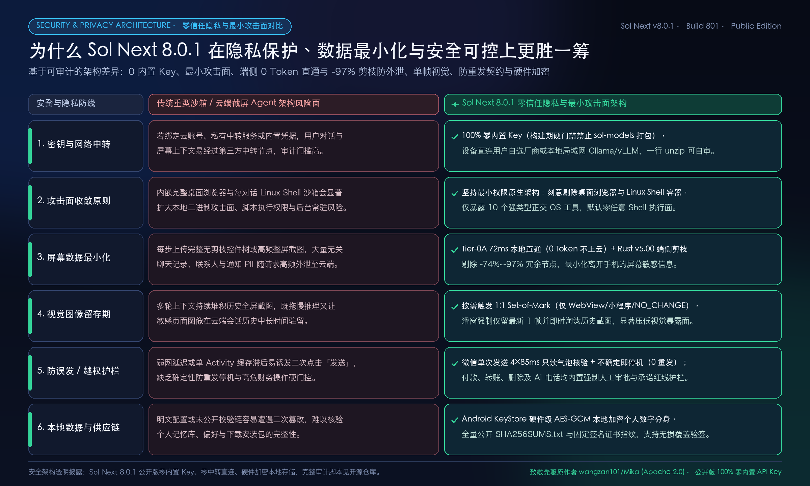
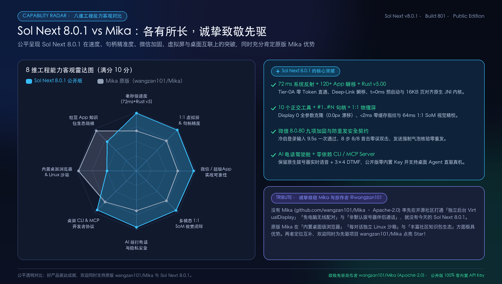

讲明白：早期代理 Mika 到底差在哪？Sol Next 9.0.8 比它强在哪？
Sol Next 9.0.8（Build 908 · Apache-2.0 · 全新独立旗舰）是由许昌北海医院张重阳完全独立打造的新一代 Android & 鸿蒙 AI 手机行动替身。相比早期工具型手机代理 Mika，Sol Next 9.0.8 彻底根治了普通人用 Mika 时最头疼的 8 大短板，在门槛、稳定度、速度、精度、隐私、多语言、游戏与 OTA 升级上实现跨代全面超越。
❌ 早期手机代理 Mika 的 8 大致命短板
- 装完不能直接用：必须自己注册平台、充钱买 API Key 并配好接口，90% 普通用户第一步就卡住。
- 一关 Wi-Fi 立刻断连：离开家里 Wi-Fi 切 5G 无线调试就失效；华为鸿蒙还要折腾繁琐无线配对。
- 慢且烧 Token，经常点偏：查电量/开开关也要云端截屏规划（~2,400ms/步）；缩放网格换算坐标经常点歪。
- 满屏工程日志 + 缺离线语音：像开发者调试面板，且语音对话依赖外部付费语音接口。
- 隐私与防误操作薄弱：屏幕明文直接上云、重型内置浏览器/Linux 容器扩大攻击面、微信界面易误双击或重复发送。
- 单一语言 + 更新龟速：海外与多语用户无法直接使用；更新需手动翻仓库，国内直连下载极慢。
✅ Sol Next 9.0.8 的全面降维领先
- 开箱免费内置 Rust 加密 DeepSeek：装好立刻能免费对话与操作手机，零明文密钥 + TLS 证书防抓包，且随时可换任意 BYOK。
- 关 Wi-Fi 切 5G 100% 永不断连：底层锁死
adb_enabled=1+127.0.0.1:5555回环；鸿蒙自动识别免无线调试。 - 快 33 倍 + 0.0px 外科级精准：
72 ms零 Token 系统直通、120+ App<250 ms瞬移、Rust 16KB JNI 剪枝-74%~-97%、Display 0 1:1 克隆零误差。 - 晨曦轨道零学习成本 + 端侧离线语音：大白话步骤树 + 实时虚拟屏预览 + 内置 16KB 离线神经 ASR（770ms）与 TTS（112ms）。
- 金融级隐私与微信 0 重发加固：端侧脱敏防火墙（身份证/银行卡本地先打码）+ 付款/微信先问后行 + 微信 9 项加固（登录 9.5s 一次过，0 重发）。
- 全球 20 国语言 + 4 线程极速 OTA：按手机语言自动切换（含阿拉伯语 RTL）；新版自动弹窗更新说明 + 4 通道多镜像提速 3–8 倍。
📊 全部 7 组 2K 实测架构与基准图谱（点击查看大图）


1080×2280 @ 440dpi scale=1.0 0.0px 零漂移。


📋 14 项实测参数与体验详表
| 对比维度 | 早期手机代理 Mika（短板） | Sol Next 9.0.8（全新独立旗舰 · ai.sol.next） |
|---|---|---|
| 开箱即用与大模型 | 必须自行购买并配置 API Key | 免费内置 Rust 加密 DeepSeek V4.1 Flash（装完就能用）+ 随时换任意 BYOK |
| 关 Wi-Fi 外出稳态 | 关闭 Wi-Fi 无线调试立刻断连 | 锁定 adb_enabled=1 + 127.0.0.1:5555 回环，关 Wi-Fi 切 5G 100% 持续在线 |
| 华为鸿蒙适配 | 仍需复杂无线调试配对 | 自动识别鸿蒙 OS 免无线调试，3 步直达满血体验 |
| 系统指令响应速度 | 读屏 + 云端 LLM 慢速规划（~2,400 ms） | 72 ms · 0 Token（快 33×，本地原生直通数据不离机） |
| 主流 App 跳转速度 | 逐页返回桌面搜索点击 | <250 ms 协议瞬移（120+ 主流应用 Deep-Link + 并发预启动） |
| 端侧加速与剪枝 | Kotlin/JVM 控件遍历，Token 消耗高 | Rust v5 16KB JNI（微秒级剪枝 -74% ~ -97%，提速省钱降外泄） |
| 后台虚拟屏精度 | 缩放网格坐标换算，易点歪 | Display 0 1:1 物理复刻（scale=1.0 · 0.0px 零漂移 + 内嵌实时预览卡） |
| 全球 20 国多语言 | 单一语言为主 | 全球 20 国语言按手机系统语言自动切换 + 阿拉伯语 RTL + AI/语音同步 |
| 微信 8.0.80 稳态 | 通用适配，易误双击或重复发送 | 九项实战加固：登录 9.5s 一次过、8/8 首击零误双击、气泡契约 0 重发 |
| 隐私安全与攻击面 | 明文上云、内置重型浏览器/Linux 容器扩大攻击面 | 最小攻击面原生架构 + 端侧脱敏防火墙 + TLS 证书绑定 + 付款先问后行 |
| 零 Key 实时语音 | 依赖外部云端付费语音接口 | 内置 16KB 离线神经 ASR（770ms）+ 端侧神经 TTS（112ms） |
| 60Hz 游戏操控 | 仅支持慢速单点点击 | 4 指并发多点触控 + 《金铲铲之战》Rust 引擎 + 斗地主 3/3 全胜 |
| AI 高清接打电话 | 基础伴侣通话框架 | 35 柱实时声纹 + <0.1ms 端侧反诈盾 + 通话中悄悄话 + 一键人工接管 |
| OTA 更新与桌面联动 | 手动找包慢速下载 / 仅移动端运行 | 自动弹窗更新说明 + 4 线程多镜像加速（快 3–8×）+ 零依赖 CLI & stdio MCP Server |